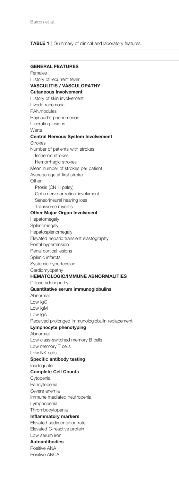

Deficiency of adenosine deaminase 2 (DADA2) is a rare autosomal recessive systemic autoinflammatory vasculopathy caused by biallelic loss-of-function variants in ADA2 (formerly CECR1), encoding the major extracellular adenosine deaminase, which also acts as a secreted growth factor. Reduced ADA2 enzymatic activity and impaired growth-factor function disrupt endothelial integrity and myeloid homeostasis, driving a spectrum of intermittent fevers, livedo racemosa, early-onset lacunar and hemorrhagic strokes, polyarteritis-nodosa-like vasculitis, immunodeficiency, and bone marrow / hematologic abnormalities. Disease typically presents in childhood with marked inter- and intrafamilial variability. Anti-TNF agents are the mainstay of treatment and prevent stroke; hematopoietic stem cell transplantation can correct severe hematologic and immune disease.
Ask a research question about Deficiency of Adenosine Deaminase 2. OpenScientist will conduct autonomous deep research using the Disorder Mechanisms Knowledge Base and PubMed literature (typically 10-30 minutes).
Do not include personal health information in your question. Questions and results are cached in your browser's local storage.
name: Deficiency of Adenosine Deaminase 2
creation_date: "2026-06-03T00:00:00Z"
category: Mendelian
disease_term:
preferred_term: Deficiency of adenosine deaminase 2
term:
id: MONDO:0014306
label: deficiency of adenosine deaminase 2
description: >
Deficiency of adenosine deaminase 2 (DADA2) is a rare autosomal recessive
systemic autoinflammatory vasculopathy caused by biallelic loss-of-function
variants in ADA2 (formerly CECR1), encoding the major extracellular adenosine
deaminase, which also acts as a secreted growth factor. Reduced ADA2 enzymatic
activity and impaired growth-factor function disrupt endothelial integrity and
myeloid homeostasis, driving a spectrum of intermittent fevers, livedo
racemosa, early-onset lacunar and hemorrhagic strokes, polyarteritis-nodosa-like
vasculitis, immunodeficiency, and bone marrow / hematologic abnormalities.
Disease typically presents in childhood with marked inter- and intrafamilial
variability. Anti-TNF agents are the mainstay of treatment and prevent stroke;
hematopoietic stem cell transplantation can correct severe hematologic and
immune disease.
parents:
- Vasculitis
- Type 1 interferonopathy of childhood
- Hereditary disorder of connective tissue
references:
- reference: PMID:31393689
title: "Adenosine Deaminase 2 Deficiency."
tags:
- GeneReviews
pathophysiology:
- name: ADA2 Loss of Function
description: >
Biallelic loss-of-function variants in ADA2 (formerly CECR1) markedly
reduce or abolish the extracellular adenosine deaminase 2 enzyme, the major
plasma adenosine deaminase. Diagnosis is supported by low (<5% of normal)
or undetectable ADA2 catalytic activity in plasma or serum. ADA2 is a
secreted protein with both adenosine-deaminating activity and growth-factor
activity, so loss of function impairs purine catabolism and ADA2-dependent
signaling in the vasculature and myeloid compartment.
biological_processes:
- preferred_term: adenosine catabolic process
term:
id: GO:0006154
label: adenosine catabolic process
modifier: DECREASED
evidence:
- reference: PMID:24552284
reference_title: "Early-onset stroke and vasculopathy associated with mutations in ADA2."
supports: SUPPORT
evidence_source: HUMAN_CLINICAL
snippet: "Patients had a marked reduction in the levels of ADA2 and ADA2-specific enzyme activity in the blood."
explanation: >
Demonstrates that recessive CECR1/ADA2 mutations cause loss of ADA2
protein and enzyme activity in patients, the primary biochemical lesion.
- reference: PMID:24552285
reference_title: "Mutant adenosine deaminase 2 in a polyarteritis nodosa vasculopathy."
supports: SUPPORT
evidence_source: HUMAN_CLINICAL
snippet: "Recessive loss-of-function mutations of ADA2, a growth factor that is the major extracellular adenosine deaminase, can cause polyarteritis nodosa vasculopathy with highly varied clinical expression."
explanation: >
Establishes ADA2 as the major extracellular adenosine deaminase and a
growth factor whose loss of function causes the vasculopathy.
downstream:
- target: Endothelial Damage and Vasculopathy
causal_link_type: INDIRECT_UNKNOWN_INTERMEDIATES
- target: Myeloid Inflammatory Dysregulation
causal_link_type: INDIRECT_UNKNOWN_INTERMEDIATES
- target: Lysosomal DNA Editing and TLR9 Immune Sensing
causal_link_type: INDIRECT_UNKNOWN_INTERMEDIATES
- name: Endothelial Damage and Vasculopathy
description: >
Loss of ADA2 compromises endothelial integrity. Biopsies of skin, liver,
and brain show vasculopathic changes with compromised endothelial
integrity, endothelial cellular activation, and inflammation. Patient
monocytes induce damage in cocultured endothelial-cell layers, linking
myeloid dysregulation to the vascular injury that underlies stroke and
polyarteritis-nodosa-like vasculitis.
cell_types:
- preferred_term: vascular endothelial cell
term:
id: CL:0002139
label: endothelial cell of vascular tree
biological_processes:
- preferred_term: inflammatory response
term:
id: GO:0006954
label: inflammatory response
modifier: INCREASED
evidence:
- reference: PMID:24552284
reference_title: "Early-onset stroke and vasculopathy associated with mutations in ADA2."
supports: SUPPORT
evidence_source: HUMAN_CLINICAL
snippet: "Skin, liver, and brain biopsies revealed vasculopathic changes characterized by compromised endothelial integrity, endothelial cellular activation, and inflammation."
explanation: >
Direct histopathologic evidence of endothelial injury and vascular
inflammation in DADA2 patient tissues.
- reference: PMID:24552284
reference_title: "Early-onset stroke and vasculopathy associated with mutations in ADA2."
supports: SUPPORT
evidence_source: IN_VITRO
snippet: "Monocytes from patients induced damage in cocultured endothelial-cell layers."
explanation: >
In vitro coculture shows DADA2 patient monocytes directly damage
endothelium, mechanistically linking myeloid cells to vasculopathy.
downstream:
- target: Vascular and Neurologic Manifestations
causal_link_type: DIRECT
- name: Myeloid Inflammatory Dysregulation
description: >
ADA2 deficiency skews monocyte/macrophage differentiation toward a
proinflammatory state and disrupts neutrophil homeostasis. In a zebrafish
model, knockdown of the ADA2 homologue caused intracranial hemorrhages and
neutropenia, phenotypes rescued by wild-type but not mutant human CECR1,
implicating ADA2 in myeloid and vascular development. Proinflammatory
cytokines, including TNF, drive the autoinflammatory phenotype, which is why
TNF inhibition is clinically effective.
cell_types:
- preferred_term: monocyte
term:
id: CL:0000576
label: monocyte
- preferred_term: macrophage
term:
id: CL:0000235
label: macrophage
- preferred_term: neutrophil
term:
id: CL:0000775
label: neutrophil
biological_processes:
- preferred_term: macrophage activation
term:
id: GO:0042116
label: macrophage activation
modifier: INCREASED
- preferred_term: tumor necrosis factor production
term:
id: GO:0032640
label: tumor necrosis factor production
modifier: INCREASED
evidence:
- reference: PMID:24552284
reference_title: "Early-onset stroke and vasculopathy associated with mutations in ADA2."
supports: SUPPORT
evidence_source: MODEL_ORGANISM
snippet: "Knockdown of a zebrafish ADA2 homologue caused intracranial hemorrhages and neutropenia - phenotypes that were prevented by coinjection with nonmutated (but not with mutated) human CECR1."
explanation: >
Model-organism data linking ADA2 loss to hemorrhage and neutropenia and
confirming the variants are loss-of-function.
downstream:
- target: Hematologic Manifestations
causal_link_type: INDIRECT_UNKNOWN_INTERMEDIATES
- name: Vascular and Neurologic Manifestations
description: >
Endothelial injury and systemic vasculopathy produce intermittent fevers,
livedoid rash, early-onset lacunar (ischemic) and hemorrhagic strokes,
hepatosplenomegaly, hypertension, and cutaneous or systemic polyarteritis
nodosa.
evidence:
- reference: PMID:24552284
reference_title: "Early-onset stroke and vasculopathy associated with mutations in ADA2."
supports: SUPPORT
evidence_source: HUMAN_CLINICAL
snippet: "We observed a syndrome of intermittent fevers, early-onset lacunar strokes and other neurovascular manifestations, livedoid rash, hepatosplenomegaly, and systemic vasculopathy in three unrelated patients."
explanation: >
Describes the core inflammatory/vascular clinical syndrome of DADA2.
- name: Hematologic Manifestations
description: >
Bone marrow failure and cytopenias are a major DADA2 phenotype group,
including pure red cell aplasia, immune-mediated neutropenia, and
pancytopenia. These hematologic features respond variably to anti-TNF
therapy and may require hematopoietic stem cell transplantation.
evidence:
- reference: PMID:35095905
reference_title: "The Spectrum of the Deficiency of Adenosine Deaminase 2: An Observational Analysis of a 60 Patient Cohort."
supports: SUPPORT
evidence_source: HUMAN_CLINICAL
snippet: "Hematologic findings including pure red cell aplasia (PRCA), immune-mediated neutropenia, and pancytopenia were observed in half of patients."
explanation: >
Cohort evidence that hematologic manifestations are a prominent,
frequent DADA2 phenotype.
- name: Lysosomal DNA Editing and TLR9 Immune Sensing
description: >
An emerging (2024) mechanistic model expands the classical extracellular
adenosine paradigm. ADA2 localizes within lysosomes, where it acts as a
deoxyadenosine deaminase on DNA, converting deoxyadenosine (dA) to
deoxyinosine (dI). This dA-to-dI editing modulates lysosomal innate immune
sensing of nucleic acids through Toll-like receptor 9 (TLR9), providing a
cell-intrinsic mechanism that may drive the type I interferon and TNF
pathway activation seen in DADA2 (a recognized type 1 interferonopathy of
childhood).
biological_processes:
- preferred_term: toll-like receptor 9 signaling pathway
term:
id: GO:0034162
label: toll-like receptor 9 signaling pathway
modifier: ABNORMAL
- preferred_term: type I interferon production
term:
id: GO:0032606
label: type I interferon production
modifier: INCREASED
evidence:
- reference: PMID:39441717
reference_title: "ADA2 is a lysosomal deoxyadenosine deaminase acting on DNA involved in regulating TLR9-mediated immune sensing of DNA."
supports: SUPPORT
evidence_source: IN_VITRO
snippet: "we demonstrate that dA-to-dI editing of DNA molecules and ADA2 regulate lysosomal immune sensing of nucleic acids (NAs) by modulating Toll-like receptor 9 (TLR9) activation."
explanation: >
Establishes the emerging lysosomal DNA-editing / TLR9 mechanism that may
underlie the innate-immune activation of DADA2, complementing the
extracellular-adenosine model.
downstream:
- target: Myeloid Inflammatory Dysregulation
causal_link_type: INDIRECT_UNKNOWN_INTERMEDIATES
phenotypes:
- category: Phenotypic abnormality
name: Recurrent fever
description: Intermittent inflammatory fevers are a cardinal feature of DADA2.
phenotype_term:
preferred_term: Recurrent fever
term:
id: HP:0001954
label: Recurrent fever
evidence:
- reference: PMID:24552284
reference_title: "Early-onset stroke and vasculopathy associated with mutations in ADA2."
supports: SUPPORT
evidence_source: HUMAN_CLINICAL
snippet: "We observed a syndrome of intermittent fevers, early-onset lacunar strokes and other neurovascular manifestations, livedoid rash, hepatosplenomegaly, and systemic vasculopathy in three unrelated patients."
explanation: Intermittent fevers were a defining feature of the initial DADA2 cohort.
- category: Phenotypic abnormality
name: Livedo racemosa
description: Livedo racemosa/reticularis is the characteristic cutaneous manifestation.
phenotype_term:
preferred_term: Livedo racemosa
term:
id: HP:0033260
label: Livedo racemosa
evidence:
- reference: PMID:35095905
reference_title: "The Spectrum of the Deficiency of Adenosine Deaminase 2: An Observational Analysis of a 60 Patient Cohort."
supports: SUPPORT
evidence_source: HUMAN_CLINICAL
snippet: "first described in patients with fevers, recurrent strokes, livedo racemosa, and polyarteritis nodosa in 2014"
explanation: Livedo racemosa is a cardinal cutaneous feature of DADA2.
- category: Phenotypic abnormality
name: Stroke
description: Early-onset recurrent lacunar (ischemic) and hemorrhagic strokes, usually before age ten.
phenotype_term:
preferred_term: Stroke
term:
id: HP:0001297
label: Stroke
# frequency assigned as a clinical estimate (Pattern D, frequency-evidence-guidelines.md):
# stroke is described as a cardinal/core feature of DADA2 across the founding cohort
# (PMID:24552284) and the 60-patient observational cohort (PMID:35095905), but no exact
# percentage is reported in the cited abstracts.
frequency: FREQUENT
evidence:
- reference: PMID:24552284
reference_title: "Early-onset stroke and vasculopathy associated with mutations in ADA2."
supports: SUPPORT
evidence_source: HUMAN_CLINICAL
snippet: "Loss-of-function mutations in CECR1 were associated with a spectrum of vascular and inflammatory phenotypes, ranging from early-onset recurrent stroke to systemic vasculopathy or vasculitis."
explanation: Establishes early-onset recurrent stroke as a core DADA2 phenotype.
- category: Phenotypic abnormality
name: Ischemic stroke
description: Lacunar ischemic strokes affecting deep brain structures, often recurrent.
phenotype_term:
preferred_term: Ischemic (lacunar) stroke
term:
id: HP:0002140
label: Ischemic stroke
evidence:
- reference: PMID:24552284
reference_title: "Early-onset stroke and vasculopathy associated with mutations in ADA2."
supports: SUPPORT
evidence_source: HUMAN_CLINICAL
snippet: "We observed a syndrome of intermittent fevers, early-onset lacunar strokes and other neurovascular manifestations, livedoid rash, hepatosplenomegaly, and systemic vasculopathy in three unrelated patients."
explanation: Documents early-onset lacunar (ischemic) strokes in DADA2.
- category: Phenotypic abnormality
name: Intracranial hemorrhage
description: Hemorrhagic strokes / intracranial hemorrhage can occur in addition to ischemic events.
phenotype_term:
preferred_term: Hemorrhagic stroke / intracranial hemorrhage
term:
id: HP:0002170
label: Intracranial hemorrhage
evidence:
- reference: PMID:24552284
reference_title: "Early-onset stroke and vasculopathy associated with mutations in ADA2."
supports: SUPPORT
evidence_source: MODEL_ORGANISM
snippet: "Knockdown of a zebrafish ADA2 homologue caused intracranial hemorrhages and neutropenia - phenotypes that were prevented by coinjection with nonmutated (but not with mutated) human CECR1."
explanation: >
Zebrafish model recapitulates the intracranial hemorrhage phenotype seen
in DADA2 patients (hemorrhagic strokes are part of the human phenotype
per the GeneReviews chapter).
- reference: PMID:31393689
reference_title: "Adenosine Deaminase 2 Deficiency."
supports: SUPPORT
evidence_source: HUMAN_CLINICAL
snippet: "manifest as early-onset ischemic (lacunar) and/or hemorrhagic strokes, or as"
explanation: >
GeneReviews documents hemorrhagic strokes / intracranial hemorrhage as part
of the human DADA2 vasculitis phenotype, providing human clinical support
alongside the zebrafish model.
- category: Phenotypic abnormality
name: Polyarteritis nodosa
description: Cutaneous or systemic polyarteritis-nodosa-like medium-vessel vasculitis.
phenotype_term:
preferred_term: Polyarteritis nodosa
term:
id: HP:6000658
label: Medium vessel vasculitis
evidence:
- reference: PMID:24552285
reference_title: "Mutant adenosine deaminase 2 in a polyarteritis nodosa vasculopathy."
supports: SUPPORT
evidence_source: HUMAN_CLINICAL
snippet: "In all the families, vasculitis was caused by recessive mutations in CECR1, the gene encoding adenosine deaminase 2 (ADA2)."
explanation: >
DADA2 was independently identified as the cause of familial polyarteritis
nodosa vasculitis. The ontology term Medium vessel vasculitis (HP:6000658)
precisely captures the PAN-type vasculitis, whose ontology definition
explicitly cites polyarteritis nodosa.
- category: Phenotypic abnormality
name: Hepatosplenomegaly
description: Enlargement of the liver and spleen is commonly observed.
phenotype_term:
preferred_term: Hepatosplenomegaly
term:
id: HP:0001433
label: Hepatosplenomegaly
evidence:
- reference: PMID:24552284
reference_title: "Early-onset stroke and vasculopathy associated with mutations in ADA2."
supports: SUPPORT
evidence_source: HUMAN_CLINICAL
snippet: "We observed a syndrome of intermittent fevers, early-onset lacunar strokes and other neurovascular manifestations, livedoid rash, hepatosplenomegaly, and systemic vasculopathy in three unrelated patients."
explanation: Hepatosplenomegaly was present in the founding DADA2 cohort.
- category: Phenotypic abnormality
name: Immunodeficiency
description: >
Immune dysregulation with hypogammaglobulinemia, low class-switched memory
B cells, and inadequate vaccine responses; infections are nonetheless rare.
phenotype_term:
preferred_term: Immunodeficiency
term:
id: HP:0002721
label: Immunodeficiency
evidence:
- reference: PMID:35095905
reference_title: "The Spectrum of the Deficiency of Adenosine Deaminase 2: An Observational Analysis of a 60 Patient Cohort."
supports: SUPPORT
evidence_source: HUMAN_CLINICAL
snippet: "Evidence of immune dysregulation was commonly observed, including hypogammaglobulinemia, absent to low class-switched memory B cells, and inadequate response to vaccination."
explanation: Cohort evidence of the immunodeficiency/immune-dysregulation phenotype.
- category: Phenotypic abnormality
name: Decreased circulating immunoglobulin concentration
description: Hypogammaglobulinemia is part of the immune-dysregulation phenotype.
phenotype_term:
preferred_term: Hypogammaglobulinemia
term:
id: HP:0004313
label: Decreased circulating immunoglobulin concentration
evidence:
- reference: PMID:35095905
reference_title: "The Spectrum of the Deficiency of Adenosine Deaminase 2: An Observational Analysis of a 60 Patient Cohort."
supports: SUPPORT
evidence_source: HUMAN_CLINICAL
snippet: "Evidence of immune dysregulation was commonly observed, including hypogammaglobulinemia, absent to low class-switched memory B cells, and inadequate response to vaccination."
explanation: Documents hypogammaglobulinemia in the DADA2 cohort.
- category: Phenotypic abnormality
name: Pure red cell aplasia
description: Pure red cell aplasia is a recognized hematologic manifestation.
phenotype_term:
preferred_term: Pure red cell aplasia
term:
id: HP:0012410
label: Pure red cell aplasia
evidence:
- reference: PMID:35095905
reference_title: "The Spectrum of the Deficiency of Adenosine Deaminase 2: An Observational Analysis of a 60 Patient Cohort."
supports: SUPPORT
evidence_source: HUMAN_CLINICAL
snippet: "Hematologic findings including pure red cell aplasia (PRCA), immune-mediated neutropenia, and pancytopenia were observed in half of patients."
explanation: Pure red cell aplasia documented as a DADA2 hematologic phenotype.
- category: Phenotypic abnormality
name: Decreased total neutrophil count
description: Immune-mediated neutropenia is a common hematologic finding.
phenotype_term:
preferred_term: Neutropenia
term:
id: HP:0001875
label: Decreased total neutrophil count
evidence:
- reference: PMID:35095905
reference_title: "The Spectrum of the Deficiency of Adenosine Deaminase 2: An Observational Analysis of a 60 Patient Cohort."
supports: SUPPORT
evidence_source: HUMAN_CLINICAL
snippet: "Hematologic findings including pure red cell aplasia (PRCA), immune-mediated neutropenia, and pancytopenia were observed in half of patients."
explanation: Documents immune-mediated neutropenia in DADA2.
- category: Phenotypic abnormality
name: Pancytopenia
description: Pancytopenia / bone marrow failure can occur in DADA2.
phenotype_term:
preferred_term: Pancytopenia
term:
id: HP:0001876
label: Pancytopenia
evidence:
- reference: PMID:35095905
reference_title: "The Spectrum of the Deficiency of Adenosine Deaminase 2: An Observational Analysis of a 60 Patient Cohort."
supports: SUPPORT
evidence_source: HUMAN_CLINICAL
snippet: "Hematologic findings including pure red cell aplasia (PRCA), immune-mediated neutropenia, and pancytopenia were observed in half of patients."
explanation: Pancytopenia documented as a DADA2 hematologic phenotype.
- category: Phenotypic abnormality
name: Thrombocytopenia
description: Thrombocytopenia is among the hematologic manifestations of DADA2.
phenotype_term:
preferred_term: Thrombocytopenia
term:
id: HP:0001873
label: Thrombocytopenia
evidence:
- reference: PMID:31393689
reference_title: "Adenosine Deaminase 2 Deficiency."
supports: SUPPORT
evidence_source: HUMAN_CLINICAL
snippet: "lymphopenia, neutropenia, pure red cell aplasia, thrombocytopenia, or pancytopenia"
explanation: GeneReviews lists thrombocytopenia among the hematologic disorders of DADA2.
- category: Phenotypic abnormality
name: Decreased total lymphocyte count
description: Lymphopenia is among the hematologic/immune manifestations.
phenotype_term:
preferred_term: Lymphopenia
term:
id: HP:0001888
label: Decreased total lymphocyte count
evidence:
- reference: PMID:31393689
reference_title: "Adenosine Deaminase 2 Deficiency."
supports: SUPPORT
evidence_source: HUMAN_CLINICAL
snippet: "lymphopenia, neutropenia, pure red cell aplasia, thrombocytopenia, or pancytopenia"
explanation: GeneReviews lists lymphopenia among the hematologic disorders of DADA2.
- category: Phenotypic abnormality
name: Hypertension
description: Hypertension is frequently observed, often related to vasculopathy.
phenotype_term:
preferred_term: Hypertension
term:
id: HP:0000822
label: Hypertension
evidence:
- reference: PMID:31393689
reference_title: "Adenosine Deaminase 2 Deficiency."
supports: SUPPORT
evidence_source: HUMAN_CLINICAL
snippet: "Hypertension and hepatosplenomegaly are often found."
explanation: GeneReviews notes hypertension is often found in DADA2.
- category: Phenotypic abnormality
name: Arthritis
description: Musculoskeletal inflammation including arthritis, arthralgia, myalgia, and myositis.
phenotype_term:
preferred_term: Arthritis
term:
id: HP:0001369
label: Arthritis
evidence:
- reference: PMID:31393689
reference_title: "Adenosine Deaminase 2 Deficiency."
supports: SUPPORT
evidence_source: HUMAN_CLINICAL
snippet: "musculoskeletal involvement (myalgia/arthralgia, arthritis, myositis)"
explanation: GeneReviews documents musculoskeletal involvement including arthritis in DADA2.
genetic:
- name: ADA2 biallelic loss of function
gene_term:
preferred_term: ADA2
term:
id: hgnc:1839
label: ADA2
association: Pathogenic Variants
inheritance:
- name: Autosomal recessive
evidence:
- reference: PMID:24552285
reference_title: "Mutant adenosine deaminase 2 in a polyarteritis nodosa vasculopathy."
supports: SUPPORT
evidence_source: HUMAN_CLINICAL
snippet: "In all the families, vasculitis was caused by recessive mutations in CECR1, the gene encoding adenosine deaminase 2 (ADA2)."
explanation: >
Establishes recessive (biallelic) CECR1/ADA2 loss-of-function variants
as the cause of DADA2. CECR1 is the former symbol for ADA2.
- reference: PMID:24552284
reference_title: "Early-onset stroke and vasculopathy associated with mutations in ADA2."
supports: SUPPORT
evidence_source: HUMAN_CLINICAL
snippet: "All nine patients carried recessively inherited mutations in CECR1 (cat eye syndrome chromosome region, candidate 1), encoding adenosine deaminase 2 (ADA2), that were predicted to be deleterious; these mutations were rare or absent in healthy controls."
explanation: Independent confirmation of recessive deleterious CECR1/ADA2 variants in patients.
treatments:
- name: Anti-TNF Therapy
description: >
Anti-tumor necrosis factor (TNF) agents (etanercept, adalimumab, golimumab,
infliximab, certolizumab) are the drugs of choice for symptomatic and
asymptomatic individuals with biallelic ADA2 pathogenic variants. They
prevent and eliminate autoinflammatory/vasculitic manifestations and reduce
the risk of ischemic stroke. Hematologic and immune features respond more
variably, and anti-TNF agents have little effect on severe bone marrow
failure.
treatment_term:
preferred_term: anti-TNF therapy
term:
id: NCIT:C15986
label: Pharmacotherapy
therapeutic_agent:
- preferred_term: adalimumab
term:
id: NCIT:C65216
label: Adalimumab
- preferred_term: etanercept
term:
id: NCIT:C2381
label: Etanercept
evidence:
- reference: PMID:35095905
reference_title: "The Spectrum of the Deficiency of Adenosine Deaminase 2: An Observational Analysis of a 60 Patient Cohort."
supports: SUPPORT
evidence_source: HUMAN_CLINICAL
snippet: "We significantly extended our experience using anti-TNF agents, with no strokes observed in 2026 patient months on TNF inhibitors."
explanation: >
Cohort evidence that anti-TNF therapy prevents stroke in DADA2, the
mainstay of treatment.
- reference: PMID:33420503
reference_title: "Anti-tumour necrosis factor treatment for the prevention of ischaemic events in patients with deficiency of adenosine deaminase 2 (DADA2)."
supports: SUPPORT
evidence_source: HUMAN_CLINICAL
snippet: "Anti-TNF treatment significantly reduced the incidence of ischaemic events and other vasculitic manifestations of DADA2, but was not effective for immunodeficiency or bone marrow failure."
explanation: >
Multicenter retrospective study quantifying that anti-TNF therapy
prevents ischemic events and vasculitis but not the hematologic/immune
phenotype, consistent with anti-TNF as first-line disease-modifying
therapy.
- name: Hematopoietic Stem Cell Transplantation
description: >
Allogeneic hematopoietic cell transplantation (HCT) can correct severe
hematologic and immunologic DADA2 disease that is refractory to anti-TNF
therapy; transplanted patients in the NIH cohort discontinued anti-TNF
therapy after engraftment.
therapeutic_modality: CELL_THERAPY
treatment_term:
preferred_term: hematopoietic stem cell transplantation
term:
id: MAXO:0000747
label: hematopoietic stem cell transplantation
evidence:
- reference: PMID:35095905
reference_title: "The Spectrum of the Deficiency of Adenosine Deaminase 2: An Observational Analysis of a 60 Patient Cohort."
supports: SUPPORT
evidence_source: HUMAN_CLINICAL
snippet: "All transplanted patients are still alive and have discontinued anti-TNF therapy."
explanation: >
Cohort evidence that allogeneic HCT can be curative for DADA2 hematologic
/ immune disease, allowing discontinuation of anti-TNF therapy.
- reference: PMID:34324127
reference_title: "Hematopoietic Cell Transplantation Cures Adenosine Deaminase 2 Deficiency: Report on 30 Patients."
supports: SUPPORT
evidence_source: HUMAN_CLINICAL
snippet: "HCT was an effective treatment for DADA2, successfully reversing the refractory cytopenia, as well as the vasculopathy and immunodeficiency."
explanation: >
International 30-patient series showing HCT reverses refractory
cytopenia, vasculopathy, and immunodeficiency, establishing HCT as a
definitive cure for DADA2.
Deficiency of adenosine deaminase 2 (DADA2) is an autosomal recessive inborn error of immunity caused by biallelic loss-of-function variants in ADA2 (formerly CECR1) and characterized by a triad of (i) vasculitis/vasculopathy with early-onset ischemic and hemorrhagic strokes and cutaneous vasculopathy, (ii) immune dysregulation/immunodeficiency, and (iii) hematologic disease including cytopenias and bone marrow failure. Large cohorts and meta-reviews show substantial neurologic burden (≈50% have a neurologic event), strong prevention of ischemic events with TNF inhibition, and curative potential of hematopoietic cell transplantation (HCT) for refractory hematologic/immunologic phenotypes. Recent 2024 mechanistic work implicates lysosomal ADA2 in DNA editing (dA→dI) and TLR9-mediated nucleic-acid sensing, expanding the classical extracellular-adenosine model. (dzhus2023anarrativereview pages 1-2, wouters2024humanada2deficiency pages 1-3, hashem2021hematopoieticcelltransplantation pages 1-2, cooray2021antitumournecrosisfactor pages 1-4, greinertollersrud2024ada2isa pages 1-3)
| Category | Item | Summary | Key quantitative details | Citation placeholders |
|---|---|---|---|---|
| Disease identifiers | Preferred name | Deficiency of adenosine deaminase 2; commonly abbreviated DADA2 | First described in 2014; complex systemic autoinflammatory/inborn error of immunity phenotype | [CITATION] |
| Disease identifiers | Standard identifiers | MONDO: MONDO_0014306; OMIM: 615688 | OpenTargets links MONDO_0014306 to ADA2 as the associated target | [CITATION] |
| Disease identifiers | Common synonyms | Human ADA2 deficiency; ADA2 deficiency; CECR1 deficiency; deficiency of adenosine deaminase type 2 | ADA2 was formerly named CECR1 | [CITATION] |
| Genetics / inheritance | Causal gene | ADA2 (formerly CECR1) encodes adenosine deaminase 2 | Biallelic deleterious/loss-of-function variants cause disease | [CITATION] |
| Genetics / inheritance | Inheritance | Autosomal recessive | Homozygous or compound heterozygous pathogenic variants reported | [CITATION] |
| Genetics / inheritance | Variant spectrum | Most reported variants are missense, but splice/intronic/structural variants also occur | 2024 review notes >400 cases reported overall | [CITATION] |
| Phenotype domains | Major domains | Three overlapping domains: inflammatory/vascular, immune dysregulatory, hematologic | Most patients show overlap rather than a single isolated phenotype | [CITATION] |
| Phenotype domains | Inflammatory / vascular | Cutaneous manifestations, livedo racemosa/reticularis, PAN-like vasculopathy, stroke, end-organ vasculitis | In Barron 2022, cardinal features were cutaneous manifestations and stroke | [CITATION] |
| Phenotype domains | Immune dysregulatory | Hypogammaglobulinemia, low/absent class-switched memory B cells, poor vaccine responses | Barron 2022 notes immune dysregulation was common, but infectious complications were exceedingly rare in that cohort | [CITATION] |
| Phenotype domains | Hematologic | PRCA, immune-mediated neutropenia, thrombocytopenia, pancytopenia, bone marrow failure | Barron 2022: hematologic findings were seen in ~50% of patients | [CITATION] |
| Neurologic burden | Any neurological event | Neurologic involvement is a major disease burden and can be initial or sole presentation | Dzhus 2023 review: 50.3% had ≥1 neurological event; initial manifestation in 5.7%; sole manifestation in 0.6% | [CITATION] |
| Neurologic burden | Cerebrovascular events | Stroke is the dominant neurologic manifestation | Among patients with neurologic manifestations, 77.5% had ≥1 cerebrovascular accident; 35.9% had multiple stroke episodes | [CITATION] |
| Neurologic burden | Stroke localization | Lacunar ischemic strokes predominate, with characteristic anatomic distribution | Brainstem involvement 37.3% and deep gray matter involvement 41.6% of ischemic strokes in the review | [CITATION] |
| Age / onset | Typical onset | Usually childhood onset, but adult-onset cases occur | Mean age of onset in reviewed neurologic literature was ~7 years; 2023 review notes onset often by age 10 | [CITATION] |
| Population statistics | Prevalence estimate | Rare disease; likely underrecognized | 2024 review estimated prevalence at ~1:222,000 and carrier frequency ~1:236 using residual activity modeling | [CITATION] |
| Diagnostics | Enzyme activity testing | Low or absent plasma/serum ADA2 enzymatic activity is a core diagnostic modality | Functional testing is especially useful when variants are uncertain or urgent diagnosis is needed | [CITATION] |
| Diagnostics | Molecular diagnosis | Confirm by biallelic pathogenic ADA2 variants via single-gene testing, panel, WES/WGS as appropriate | Diagnosis can also require follow-up for splice, intronic, or structural variants | [CITATION] |
| Diagnostics | Practical diagnostic statement | Current reviews recommend combining genetics with enzyme activity | Identification of biallelic variants plus severely diminished/absent ADA2 activity is considered diagnostic | [CITATION] |
| Treatment | Anti-TNF agents | First-line disease-modifying therapy for vasculitic/ischemic phenotype; not reliably effective for marrow failure/immunodeficiency | Includes etanercept, infliximab, adalimumab in published series | [CITATION] |
| Treatment outcomes | Anti-TNF effectiveness (multicenter) | Major reduction in ischemic events after anti-TNF treatment | Cooray 2021: median ischemic event rate fell from 2.37 per 100 patient-months pre-treatment to 0.00 per 100 patient-months post-treatment (p<0.0001); PVAS fell from 20/63 to 2/63 | [CITATION] |
| Treatment outcomes | Anti-TNF effectiveness (NIH cohort) | Sustained stroke prevention signal in longitudinal cohort | Barron 2022: no strokes observed during 2026–2027 patient-months on TNF inhibitors | [CITATION] |
| Treatment limitations | Anti-TNF nonresponse domains | Hematologic failure and severe immunodeficiency often persist despite TNF blockade | Cooray 2021 and other cohorts report these phenotypes may require transplantation | [CITATION] |
| Curative therapy | Allogeneic HCT / HSCT | Considered definitive/curative especially for bone marrow failure, severe cytopenia, severe immunodeficiency | Reverses hematologic, immunologic, and vascular disease in many reported patients | [CITATION] |
| Curative therapy outcomes | International HCT cohort | Strong survival and biochemical correction after transplantation | Hashem 2021: 30 patients, 38 HCTs, median age 9 years; 2-year OS 97%; 2-year GvHD-free relapse-free survival 73%; ADA2 activity normalized in 16/17 tested; 6 patients required >1 HCT | [CITATION] |
| Real-world implementation | Cohort examples | National and multicenter cohorts confirm pediatric predominance and anti-TNF responsiveness for vasculopathy | Brazil 2023: 18 patients, pediatric onset median 5 years, anti-TNF responses favorable; Iran 2023: 11 patients, strokes in 64%, anti-TNF response in 8 treated patients | [CITATION] |
Table: This table condenses identifiers, genetics, core phenotype domains, diagnostics, and major treatment outcomes for DADA2. It is useful as a structured evidence scaffold for a disease knowledge base entry and can be supplemented with formal citations in the final report.
| Domain | Phenotype | Barron 2022 NIH cohort (n=58 evaluated) | Dzhus 2023 review (n=628) | Melo 2023 Brazil (n=18) | Ashari 2023 Iran (n=11) | Suggested HPO term(s) | Suggested UBERON anatomy | Evidence source / citation placeholder |
|---|---|---|---|---|---|---|---|---|
| Skin / vascular | Livedo racemosa / reticularis | 43/58 (74%) livedo racemosa | Included as core phenotype; no pooled % in excerpt | 11/18 (62%) livedo reticularis | 11/11 (100%) livedo racemosa/reticularis | HP:0005344 Livedo reticularis; livedo racemosa (term name if preferred) | UBERON:0002097 skin | Barron cohort; Dzhus review; Brazil and Iran cohorts (barron2022thespectrumof pages 3-4, barron2022thespectrumof pages 4-7, dzhus2023anarrativereview pages 1-2, melo2023abraziliannationwide pages 4-6, ashari2023acaseseries pages 1-2) |
| Skin / vascular | Cutaneous ulcers / ulcerating lesions | 3/58 (5%) ulcerating lesions; additional severe digital ulceration described | Ulcerations/cutaneous necrosis listed; no pooled % in excerpt | GI/skin ulcers reported; explicit skin-ulcer % not provided | Not specified | HP:0200042 Skin ulcer; HP:0008066 Cutaneous necrosis | UBERON:0002097 skin; distal digit (term name) | Barron cohort; 2024 review; Brazil cohort (barron2022thespectrumof pages 3-4, barron2022thespectrumof pages 8-10, wouters2024humanada2deficiency pages 1-3, melo2023abraziliannationwide pages 4-6) |
| Skin / vascular | Raynaud phenomenon | 13/58 (22%) | Mentioned in broader DADA2 literature; no pooled % in excerpt | Not specified | Not specified | HP:0001945 Raynaud phenomenon | UBERON:0002398 hand; UBERON:0002104 foot; peripheral vasculature | Barron cohort (barron2022thespectrumof pages 3-4) |
| CNS | Any stroke / cerebrovascular event | 25/58 (43%) total strokes; ischemic 24/58 (41%), hemorrhagic 7/58 (12%) | Neurological event in 50.3%; among neurological cases, 77.5% had cerebrovascular accident | Neurologic involvement 16/18 (89%); ischemic stroke 11/18 (61%); hemorrhagic stroke 1/18 (5%) | 7/11 (64%) strokes | HP:0001297 Stroke; HP:0002140 Ischemic stroke; intracranial hemorrhage / cerebral hemorrhage (term name) | UBERON:0000955 brain; cerebral vasculature (term name) | Barron cohort; Dzhus review; Brazil and Iran cohorts (barron2022thespectrumof pages 3-4, barron2022thespectrumof pages 4-7, dzhus2023anarrativereview pages 1-2, melo2023abraziliannationwide pages 4-6, ashari2023acaseseries pages 1-2) |
| CNS | Ischemic stroke | 24/58 (41%) | Lacunar strokes most common; 35.9% had multiple strokes | 11/18 (61%) | Included within 7/11 stroke total; ischemic subtype not explicitly separated in excerpt | HP:0002140 Ischemic stroke; lacunar stroke (term name) | UBERON:0000955 brain | Barron cohort; Dzhus review; Brazil and Iran cohorts (barron2022thespectrumof pages 3-4, barron2022thespectrumof pages 4-7, dzhus2023anarrativereview pages 1-2, melo2023abraziliannationwide pages 4-6, ashari2023acaseseries pages 1-2) |
| CNS | Hemorrhagic stroke | 7/58 (12%) | Early-onset hemorrhagic stroke recognized; no pooled % in excerpt | 1/18 (5%) | Not specified separately | HP:0001342 Intracranial hemorrhage; cerebral hemorrhage (term name) | UBERON:0000955 brain | Barron cohort; Dzhus review; Brazil cohort (barron2022thespectrumof pages 3-4, barron2022thespectrumof pages 4-7, dzhus2023anarrativereview pages 1-2, melo2023abraziliannationwide pages 4-6) |
| CNS anatomy | Brainstem / deep gray matter predilection | ~3/4 of strokes in brainstem, cerebellum, deep brain nuclei | Brainstem 37.3% and deep gray matter 41.6% of ischemic strokes | Not quantified | Not quantified | HP: brainstem lesion / deep gray matter infarction (term names) | UBERON:0002298 brainstem; deep gray matter / basal ganglion / thalamus (term names) | Barron cohort; Dzhus review (barron2022thespectrumof pages 4-7, dzhus2023anarrativereview pages 1-2, wouters2024humanada2deficiency pages 1-3) |
| Hematologic | Cytopenias (any) | 28/58 (48%) | Cytopenias part of phenotype; no pooled % in excerpt | Persistent neutropenia described in individual cases; no overall cytopenia % in excerpt | PRCA in 1/11; broader cytopenias recognized but no cohort-wide % except PRCA | HP:0001871 Abnormality of blood and blood-forming tissues; cytopenia (term name) | UBERON:0002371 bone marrow; blood | Barron cohort; review; Brazil/Iran cohorts (barron2022thespectrumof pages 4-7, wouters2024humanada2deficiency pages 1-3, melo2023abraziliannationwide pages 4-6, ashari2023acaseseries pages 1-2) |
| Hematologic | Pure red cell aplasia (PRCA) | Mentioned as key hematologic feature; frequency not explicit in excerpt | Recognized phenotype; no pooled % in excerpt | Not specified in excerpt | 1/11 (9%) PRCA | HP:0004810 Pure red cell aplasia | UBERON:0002371 bone marrow | Barron cohort; 2024 review; Iran cohort (barron2022thespectrumof pages 1-2, wouters2024humanada2deficiency pages 1-3, ashari2023acaseseries pages 1-2) |
| Hematologic | Pancytopenia | 6/58 (10%) | Listed as part of phenotype; no pooled % in excerpt | Not specified | Not specified | HP:0001876 Pancytopenia | UBERON:0002371 bone marrow; blood | Barron cohort; 2024 review (barron2022thespectrumof pages 4-7, wouters2024humanada2deficiency pages 1-3) |
| Hematologic | Severe anemia / neutropenia / thrombocytopenia | Severe anemia 7/58 (12%); immune neutropenia 9/58 (16%); thrombocytopenia 5/58 (9%) | Anemia, neutropenia, thrombocytopenia recognized; no pooled % in excerpt | Persistent neutropenia in at least one case; no summary % in excerpt | Not specified beyond PRCA case | HP:0001903 Anemia; HP:0001875 Neutropenia; HP:0001873 Thrombocytopenia | UBERON:0000178 blood; UBERON:0002371 bone marrow | Barron cohort; reviews/cohorts (barron2022thespectrumof pages 4-7, wouters2024humanada2deficiency pages 1-3, melo2023abraziliannationwide pages 4-6, ashari2023acaseseries pages 1-2) |
| Immunologic | Hypogammaglobulinemia / quantitative immunoglobulin abnormality | 38/58 (66%) abnormal immunoglobulins | Common feature; ranges from mild hypo-Ig to CVID-like disease | Hypogammaglobulinemia described in P1, P2, P16, P18 (4/18 noted in excerpt) | 2/11 (18%) decreased immunoglobulin levels | HP:0004313 Decreased circulating immunoglobulin level; HP:0002721 Hypogammaglobulinemia | Blood / plasma (UBERON term name if needed) | Barron cohort; 2024 review; Brazil and Iran cohorts (barron2022thespectrumof pages 3-4, barron2022thespectrumof pages 8-10, wouters2024humanada2deficiency pages 1-3, melo2023abraziliannationwide pages 4-6, ashari2023acaseseries pages 1-2) |
| Immunologic | Low IgG | 32/58 (55%) | Recognized; no pooled % in excerpt | Not specified | Not specified | HP:0012147 Decreased IgG level | Blood / plasma | Barron cohort (barron2022thespectrumof pages 3-4, barron2022thespectrumof pages 8-10) |
| Immunologic | Low IgM | 36/58 (62%) | Recognized; no pooled % in excerpt | Not specified | Not specified | HP:0012149 Decreased IgM level | Blood / plasma | Barron cohort (barron2022thespectrumof pages 3-4, barron2022thespectrumof pages 8-10) |
| Immunologic | Low IgA | 25/58 (43%) | Recognized; no pooled % in excerpt | Not specified | Not specified | HP:0012148 Decreased IgA level | Blood / plasma | Barron cohort (barron2022thespectrumof pages 3-4, barron2022thespectrumof pages 8-10) |
| Immunologic | Low class-switched memory B cells | 32/47 (68%) | Reduced memory B cells emphasized; no pooled % in excerpt | Not specified | Not specified | Low class-switched memory B cells (term name) | CL:0000788 memory B cell | Barron cohort; 2024 review (barron2022thespectrumof pages 4-7, barron2022thespectrumof pages 8-10, wouters2024humanada2deficiency pages 1-3) |
| Visceral | Hepatomegaly / splenomegaly / hepatosplenomegaly | Hepatomegaly 29/58 (50%); splenomegaly 31/58 (53%); hepatosplenomegaly 22/58 (38%) | Lymphadenopathy/hepatosplenomegaly in up to 30% | Hepatomegaly with splenomegaly 4/18 (23%); isolated splenomegaly 2/18 (12%) | Not specified in excerpt | HP:0002240 Hepatomegaly; HP:0001744 Splenomegaly | UBERON:0002107 liver; UBERON:0002106 spleen | Barron cohort; 2024 review; Brazil cohort (barron2022thespectrumof pages 3-4, wouters2024humanada2deficiency pages 1-3, melo2023abraziliannationwide pages 4-6) |
| Visceral | Portal hypertension | 7/58 (12%) | Non-cirrhotic portal hypertension described | Not specified | Not specified | HP:0001406 Portal hypertension | UBERON:0002107 liver; portal venous system (term name) | Barron cohort; 2024 review (barron2022thespectrumof pages 3-4, wouters2024humanada2deficiency pages 1-3) |
| Visceral / renal | Renal cortical lesions | 13/58 (22%) | Kidney involvement recognized; no pooled % in excerpt | Not specified | Not specified | Renal cortical lesion (term name); HP:0000107 Renal cyst? (do not use if uncertain) | UBERON:0001225 kidney; renal cortex (term name) | Barron cohort; Dzhus review (barron2022thespectrumof pages 3-4, dzhus2023anarrativereview pages 1-2) |
| Visceral / GI | Colitis / gastrointestinal ulcers | Not specifically quantified in NIH excerpt | Intestinal involvement, abdominal pain, bowel perforation recognized | GI involvement 8/18 (45%); abdominal pain 8/18 (45%); colitis/GI ulcers 2/18 (11%) | Not specified | HP:0002012 Abnormality of the gastrointestinal tract; colitis / gastrointestinal ulceration (term names) | UBERON:0002108 small intestine; UBERON:0001155 colon; GI mucosa (term names) | Dzhus review; Brazil cohort (dzhus2023anarrativereview pages 1-2, melo2023abraziliannationwide pages 4-6) |
Table: This table summarizes major DADA2 phenotypes across key cohorts and reviews, with best-effort ontology mappings to HPO and UBERON terms. It is useful for structured knowledge-base curation of phenotype prevalence, affected anatomy, and ontology alignment.
DADA2 is a monogenic systemic autoinflammatory/vasculopathic disorder and inborn error of immunity caused by biallelic ADA2 loss-of-function variants, classically presenting with livedo racemosa/reticularis, polyarteritis nodosa (PAN)-like vasculitis, and recurrent lacunar ischemic strokes (often in early childhood), with expanding recognition of immune dysregulation and bone marrow failure phenotypes. (barron2022thespectrumof pages 1-2, wouters2024humanada2deficiency pages 1-3, dzhus2023anarrativereview pages 1-2)
Not available in retrieved sources: Orphanet ID, ICD-10/ICD-11 codes, MeSH identifier. These should be added from OMIM/Orphanet/ICD/MeSH directly in a follow-up curation pass.
Evidence in this report derives from: - Aggregated cohorts and multicenter studies (NIH 60-patient cohort; Brazilian 18-patient cohort; multicenter anti-TNF and HCT outcome studies). (barron2022thespectrumof pages 1-2, melo2023abraziliannationwide pages 1-2, cooray2021antitumournecrosisfactor pages 1-4, hashem2021hematopoieticcelltransplantation pages 1-2) - Systematic/narrative literature review (628 reported patients). (dzhus2023anarrativereview pages 1-2, wouters2024humanada2deficiency pages 1-3) - Mechanistic primary research (Cell Reports 2024; zebrafish model 2024). (greinertollersrud2024ada2isa pages 1-3, brix2024ada2regulatesinflammation pages 1-2)
Primary cause: biallelic loss-of-function variants in ADA2 (formerly CECR1) leading to absent or markedly reduced ADA2 enzymatic activity. (hashem2021hematopoieticcelltransplantation pages 1-2, wouters2024humanada2deficiency pages 3-4)
Environmental risk factors: none established from retrieved sources.
Not established in retrieved sources.
Not established in retrieved sources.
A large NIH cohort proposes three overlapping phenotype “domains”: inflammatory/vascular, immune dysregulatory, and hematologic, with frequent overlap and phenotypic evolution over time. (barron2022thespectrumof pages 1-2)
Selected quantitative phenotype frequencies are summarized in Artifact-01; key findings include:
HPO terms (examples): livedo reticularis/livedo racemosa; Raynaud phenomenon; skin ulcer. (barron2022thespectrumof pages 3-4, barron2022thespectrumof pages 8-10)
HPO terms (examples): ischemic stroke; intracranial hemorrhage; lacunar infarct; seizures. (dzhus2023anarrativereview pages 1-2, barron2022thespectrumof pages 3-4)
HPO terms (examples): pancytopenia; pure red cell aplasia; neutropenia; thrombocytopenia; bone marrow failure.
HPO terms (examples): hypogammaglobulinemia; decreased IgG/IgM/IgA; abnormal vaccine response.
Quality-of-life impact: NIH cohort noted severe sequelae after hemorrhagic strokes and moderate neuropsychological deficiencies on testing among evaluated patients; Brazilian cohort reports chronic sequelae/disabilities in 9/18 (50%). (barron2022thespectrumof pages 4-7, melo2023abraziliannationwide pages 4-6)
ClinVar/gnomAD allele frequencies: not extracted in retrieved sources.
Not established in retrieved sources.
Non-genetic environmental contributors were not identified in retrieved sources.
A convergent model supported by recent reviews and primary research is: 1) Biallelic ADA2 loss-of-function → ADA2 deficiency (low/absent activity). (wouters2024humanada2deficiency pages 3-4, hashem2021hematopoieticcelltransplantation pages 1-2) 2) Myeloid skewing and inflammatory activation (monocytes/macrophages; M1 polarization) with cytokine outputs including TNF, along with reported type I/II interferon-stimulated gene signatures. (wouters2024humanada2deficiency pages 3-4, dzhus2023anarrativereview pages 1-2, barron2022thespectrumof pages 1-2) 3) Endothelial instability / impaired vascular integrity with perivascular inflammation → small/medium vessel disease, stenosis/aneurysm/occlusion → ischemia/infarction/hemorrhage (stroke; peripheral and visceral vasculopathy). (dzhus2023anarrativereview pages 1-2, wouters2024humanada2deficiency pages 3-4) 4) In parallel, hematopoietic defects (cytopenias; marrow failure) and immune dysfunction (hypogammaglobulinemia; low memory B cells; variable infection susceptibility). (barron2022thespectrumof pages 3-4, barron2022thespectrumof pages 1-2)
A key 2024 Cell Reports study reports a major shift in ADA2 functional understanding, including the abstract statement: - “ADA2 localizes within the lysosomes…” and “ADA2 interacts with DNA molecules… converting deoxyadenosine (dA) to deoxyinosine (dI)…” and “…ADA2 regulate lysosomal immune sensing… by modulating TLR9 activation.” (greinertollersrud2024ada2isa pages 1-3)
This supports a cell-intrinsic innate immune mechanism linked to nucleic-acid sensing, potentially explaining interferon/TNF pathway activation beyond a purely extracellular adenosine model. (greinertollersrud2024ada2isa pages 1-3, wouters2024humanada2deficiency pages 4-5)
A 2024 zebrafish model study establishes cecr1b (ADA2-ortholog) loss-of-function with mechanistic resolution: - “Loss of Cecr1b disrupts hematopoietic stem cell specification… caused by induced inflammation in the vascular endothelium.” (brix2024ada2regulatesinflammation pages 1-2) - Rescue is shown by “blocking inflammation… modulation of the A2r pathway, or… recombinant human ADA2.” (brix2024ada2regulatesinflammation pages 1-2)
Key implicated cells: myeloid lineage cells (monocytes/macrophages), neutrophils, and endothelial cells; zebrafish work links vascular endothelium inflammation to impaired hematopoietic stem cell emergence. (brix2024ada2regulatesinflammation pages 1-2, dzhus2023anarrativereview pages 1-2)
Recent work places physiologically relevant ADA2 activity in the lysosome and implicates lysosomal nucleic-acid sensing via TLR9. (greinertollersrud2024ada2isa pages 1-3)
Typical onset is childhood: average onset 5–7 years; ~25% before age 1 and ~77% by age 10 in a 628-patient review, though adult-onset exists. (dzhus2023anarrativereview pages 1-2)
Course can be relapsing or progressive with recurrent ischemic events and evolving phenotype domains over time; NIH cohort emphasizes that phenotypes can evolve and overlap. (barron2022thespectrumof pages 1-2)
Autosomal recessive (biallelic loss-of-function variants). (dzhus2023anarrativereview pages 1-2, wouters2024humanada2deficiency pages 1-3)
In a 628-patient review: among patients with known sex, ~46% female and 54% male; among reported ethnicities, ~50% Caucasian with representation from South Asia and the Middle East among others. (dzhus2023anarrativereview pages 1-2)
Robust founder-effect mapping was not available in retrieved sources; however, regional recurrent variants were reported (e.g., G47R predominance in an Iranian series). (ashari2023acaseseries pages 1-2)
A 2024 review states: “Identification of biallelic known pathogenic variants in ADA2… together with determination of severely diminished or absent ADA2 enzyme activity in the serum or plasma, is diagnostic.” (wouters2024humanada2deficiency pages 3-4)
Both HPLC and spectrophotometric assays are available for ADA2 activity measurement. (wouters2024humanada2deficiency pages 3-4)
A recurring clinical issue is misdiagnosis as polyarteritis nodosa (PAN); DADA2 can constitute a significant fraction of pediatric early-onset PAN presentations in some series (as discussed in review context). (dzhus2023anarrativereview pages 1-2)
Not fully resolved in retrieved sources; however, genotype–phenotype relationships have been proposed (absent activity variants correlating with marrow failure/PRCA vs residual activity correlating with vascular phenotypes). (wouters2024humanada2deficiency pages 3-4)
Anti-TNF therapy is consistently supported as first-line disease-modifying therapy for the vasculitic/ischemic phenotype.
Quantitative outcomes (multicenter): In 31 genetically confirmed patients, anti-TNF reduced median CNS/non-CNS ischemic event rate from 2.37 per 100 patient-months pre-treatment to 0.00 per 100 patient-months post-treatment (p<0.0001) and reduced PVAS from 20/63 to 2/63. (cooray2021antitumournecrosisfactor pages 1-4)
Quantitative outcomes (NIH cohort): no strokes observed during 2026 patient-months on TNF inhibitors. (barron2022thespectrumof pages 1-2)
Limitations: Anti-TNF is generally not effective for severe immunodeficiency or bone marrow failure, which may require transplantation. (cooray2021antitumournecrosisfactor pages 1-4, wouters2024humanada2deficiency pages 3-4)
MAXO suggestions (best-effort): tumor necrosis factor inhibitor therapy; immunosuppressive therapy; biologic anti-inflammatory therapy.
A multinational retrospective cohort (30 patients, 38 HCTs) reports strong outcomes: - 2-year overall survival 97% and 2-year GvHD-free relapse-free survival 73%; normalization of ADA2 activity in 16/17 tested; “no new vascular events”; and resolution of hematologic and immunologic phenotypes. (hashem2021hematopoieticcelltransplantation pages 1-2)
Indications: bone marrow failure, immune cytopenia, malignancy, or immunodeficiency. (hashem2021hematopoieticcelltransplantation pages 1-2)
MAXO suggestions: hematopoietic cell transplantation; bone marrow transplantation.
No primary prevention strategies exist for monogenic DADA2 beyond reproductive options; preventive care focuses on secondary/tertiary prevention of strokes and vasculitic complications using TNF inhibition and careful avoidance of contraindicated antiplatelet/anticoagulant regimens in patients at risk for hemorrhagic strokes (as emphasized in review discussion). (wouters2024humanada2deficiency pages 1-3)
No naturally occurring veterinary DADA2 analog was identified in retrieved sources.
Zebrafish enable mechanistic dissection of endothelial inflammation and HSPC emergence defects and provide a platform for testing ADA2 replacement and purinergic pathway modulators; translation to human disease requires validation in patient-derived cells and clinical cohorts given species differences and the complex immune phenotype. (brix2024ada2regulatesinflammation pages 1-2, brix2024ada2regulatesinflammation pages 7-10)
The retrieved full texts in this run primarily provided DOIs and did not include PubMed IDs for most papers, except where OpenTargets lists PMIDs (e.g., 24552284/24552285 as discovery-era links). (OpenTargets Search: Deficiency of adenosine deaminase 2,DADA2-ADA2,CECR1) For a production-grade knowledge base entry, each cited DOI should be cross-walked to PMID in PubMed and recorded. This is a curation step rather than a scientific uncertainty.
References
(dzhus2023anarrativereview pages 1-2): Mariia Dzhus, Lisa Ehlers, Marjon Wouters, Katrien Jansen, Rik Schrijvers, Lien De Somer, Steven Vanderschueren, Marco Baggio, Leen Moens, Benjamin Verhaaren, Rik Lories, Giorgia Bucciol, and Isabelle Meyts. A narrative review of the neurological manifestations of human adenosine deaminase 2 deficiency. Journal of Clinical Immunology, 43:1916-1926, Aug 2023. URL: https://doi.org/10.1007/s10875-023-01555-y, doi:10.1007/s10875-023-01555-y. This article has 26 citations and is from a domain leading peer-reviewed journal.
(wouters2024humanada2deficiency pages 1-3): Marjon Wouters, Lisa Ehlers, Mariia Dzhus, Verena Kienapfel, Giorgia Bucciol, Selket Delafontaine, Anneleen Hombrouck, Bethany Pillay, Leen Moens, and Isabelle Meyts. Human ada2 deficiency: ten years later. Current Allergy and Asthma Reports, 24:477-484, Jul 2024. URL: https://doi.org/10.1007/s11882-024-01163-9, doi:10.1007/s11882-024-01163-9. This article has 17 citations and is from a peer-reviewed journal.
(hashem2021hematopoieticcelltransplantation pages 1-2): Hasan Hashem, Giorgia Bucciol, Seza Ozen, Sule Unal, Ikbal Ok Bozkaya, Nurten Akarsu, Mervi Taskinen, Minna Koskenvuo, Janna Saarela, Dimana Dimitrova, Dennis D. Hickstein, Amy P. Hsu, Steven M. Holland, Robert Krance, Ghadir Sasa, Ashish R. Kumar, Ingo Müller, Monica Abreu de Sousa, Selket Delafontaine, Leen Moens, Florian Babor, Federica Barzaghi, Maria Pia Cicalese, Robbert Bredius, Joris van Montfrans, Valentina Baretta, Simone Cesaro, Polina Stepensky, Neven Benedicte, Despina Moshous, Guillaume Le Guenno, David Boutboul, Jignesh Dalal, Joel P. Brooks, Elif Dokmeci, Jasmeen Dara, Carrie L. Lucas, Sophie Hambleton, Keith Wilson, Stephen Jolles, Yener Koc, Tayfun Güngör, Caroline Schnider, Fabio Candotti, Sandra Steinmann, Ansgar Schulz, Chip Chambers, Michael Hershfield, Amanda Ombrello, Jennifer A. Kanakry, and Isabelle Meyts. Hematopoietic cell transplantation cures adenosine deaminase 2 deficiency: report on 30 patients. Journal of Clinical Immunology, 41:1633-1647, Jul 2021. URL: https://doi.org/10.1007/s10875-021-01098-0, doi:10.1007/s10875-021-01098-0. This article has 89 citations and is from a domain leading peer-reviewed journal.
(cooray2021antitumournecrosisfactor pages 1-4): Samantha Cooray, Ebun Omyinmi, Ying Hong, Charalampia Papadopoulou, Lorraine Harper, Eslam Al-Abadi, Ruchika Goel, Shirish Dubey, Mark Wood, Stephen Jolles, Stefan Berg, Maria Ekelund, Kate Armon, Despina Eleftheriou, and Paul A Brogan. Anti-tumour necrosis factor treatment for the prevention of ischaemic events in patients with deficiency of adenosine deaminase 2 (dada2). Rheumatology, 60:4373-4378, Jan 2021. URL: https://doi.org/10.1093/rheumatology/keaa837, doi:10.1093/rheumatology/keaa837. This article has 74 citations and is from a peer-reviewed journal.
(greinertollersrud2024ada2isa pages 1-3): Ole Kristian Greiner-Tollersrud, Máté Krausz, Vincent Boehler, Aikaterini Polyzou, Maximilian Seidl, Ambra Spahiu, Zeinab Abdullah, Katarzyna Andryka-Cegielski, Felix Immunuel Dominick, Katrin Huebscher, Andreas Goschin, Cristian R. Smulski, Eirini Trompouki, Regina Link, Hilmar Ebersbach, Honnappa Srinivas, Martine Marchant, Georgios Sogkas, Dieter Staab, Cathrine Vågbø, Danilo Guerini, Sebastian Baasch, Eicke Latz, Gunther Hartmann, Philippe Henneke, Roger Geiger, Xiao P. Peng, Bodo Grimbacher, Eva Bartok, Ingrun Alseth, Max Warncke, and Michele Proietti. Ada2 is a lysosomal deoxyadenosine deaminase acting on dna involved in regulating tlr9-mediated immune sensing of dna. Cell Reports, 43:114899, Nov 2024. URL: https://doi.org/10.1016/j.celrep.2024.114899, doi:10.1016/j.celrep.2024.114899. This article has 20 citations and is from a highest quality peer-reviewed journal.
(barron2022thespectrumof pages 3-4): Karyl S. Barron, Ivona Aksentijevich, Natalie T. Deuitch, Deborah L. Stone, Patrycja Hoffmann, Ryan Videgar-Laird, Ariane Soldatos, Jenna Bergerson, Camilo Toro, Cornelia Cudrici, Michele Nehrebecky, Tina Romeo, Anne Jones, Manfred Boehm, Jennifer A. Kanakry, Dimana Dimitrova, Katherine R. Calvo, Hawwa Alao, Devika Kapuria, Gil Ben-Yakov, Dominique C. Pichard, Londa Hathaway, Alessandra Brofferio, Elisa McRae, Natalia Sampaio Moura, Oskar Schnappauf, Sofia Rosenzweig, Theo Heller, Edward W. Cowen, Daniel L. Kastner, and Amanda K. Ombrello. The spectrum of the deficiency of adenosine deaminase 2: an observational analysis of a 60 patient cohort. Frontiers in Immunology, Jan 2022. URL: https://doi.org/10.3389/fimmu.2021.811473, doi:10.3389/fimmu.2021.811473. This article has 96 citations and is from a peer-reviewed journal.
(barron2022thespectrumof pages 4-7): Karyl S. Barron, Ivona Aksentijevich, Natalie T. Deuitch, Deborah L. Stone, Patrycja Hoffmann, Ryan Videgar-Laird, Ariane Soldatos, Jenna Bergerson, Camilo Toro, Cornelia Cudrici, Michele Nehrebecky, Tina Romeo, Anne Jones, Manfred Boehm, Jennifer A. Kanakry, Dimana Dimitrova, Katherine R. Calvo, Hawwa Alao, Devika Kapuria, Gil Ben-Yakov, Dominique C. Pichard, Londa Hathaway, Alessandra Brofferio, Elisa McRae, Natalia Sampaio Moura, Oskar Schnappauf, Sofia Rosenzweig, Theo Heller, Edward W. Cowen, Daniel L. Kastner, and Amanda K. Ombrello. The spectrum of the deficiency of adenosine deaminase 2: an observational analysis of a 60 patient cohort. Frontiers in Immunology, Jan 2022. URL: https://doi.org/10.3389/fimmu.2021.811473, doi:10.3389/fimmu.2021.811473. This article has 96 citations and is from a peer-reviewed journal.
(melo2023abraziliannationwide pages 4-6): Adriana Melo, Luciana Martins de Carvalho, Virginia Paes Leme Ferriani, André Cavalcanti, Simone Appenzeller, Valéria Rossato Oliveira, Herberto Chong Neto, Nelson Augusto Rosário, Fabiano de Oliveira Poswar, Matheus Xavier Guimaraes, Cristina Maria Kokron, Rayana Elias Maia, Guilherme Diogo Silva, Gabriel Keller, Mauricio Domingues Ferreira, Dewton Moraes Vasconcelos, Myrthes Anna Maragna Toledo-Barros, Samar Freschi Barros, Nilton Salles Rosa Neto, Marta Helena Krieger, Jorge Kalil, and Leonardo Oliveira Mendonça. A brazilian nationwide multicenter study on deficiency of deaminase-2 (dada2). Advances in Rheumatology, 63:1-9, May 2023. URL: https://doi.org/10.1186/s42358-023-00303-5, doi:10.1186/s42358-023-00303-5. This article has 3 citations.
(ashari2023acaseseries pages 1-2): Kosar Asna Ashari, Nahid Aslani, Nima Parvaneh, Raheleh Assari, Morteza Heidari, Mohammadreza Fathi, Fatemeh Tahghighi Sharabian, Alireza Ronagh, Mohammad Shahrooei, Alireza Moafi, Nima Rezaei, and Vahid Ziaee. A case series of ten plus one deficiency of adenosine deaminase 2 (dada2) patients in iran. Pediatric Rheumatology Online Journal, Jun 2023. URL: https://doi.org/10.1186/s12969-023-00838-3, doi:10.1186/s12969-023-00838-3. This article has 7 citations.
(barron2022thespectrumof pages 8-10): Karyl S. Barron, Ivona Aksentijevich, Natalie T. Deuitch, Deborah L. Stone, Patrycja Hoffmann, Ryan Videgar-Laird, Ariane Soldatos, Jenna Bergerson, Camilo Toro, Cornelia Cudrici, Michele Nehrebecky, Tina Romeo, Anne Jones, Manfred Boehm, Jennifer A. Kanakry, Dimana Dimitrova, Katherine R. Calvo, Hawwa Alao, Devika Kapuria, Gil Ben-Yakov, Dominique C. Pichard, Londa Hathaway, Alessandra Brofferio, Elisa McRae, Natalia Sampaio Moura, Oskar Schnappauf, Sofia Rosenzweig, Theo Heller, Edward W. Cowen, Daniel L. Kastner, and Amanda K. Ombrello. The spectrum of the deficiency of adenosine deaminase 2: an observational analysis of a 60 patient cohort. Frontiers in Immunology, Jan 2022. URL: https://doi.org/10.3389/fimmu.2021.811473, doi:10.3389/fimmu.2021.811473. This article has 96 citations and is from a peer-reviewed journal.
(barron2022thespectrumof pages 1-2): Karyl S. Barron, Ivona Aksentijevich, Natalie T. Deuitch, Deborah L. Stone, Patrycja Hoffmann, Ryan Videgar-Laird, Ariane Soldatos, Jenna Bergerson, Camilo Toro, Cornelia Cudrici, Michele Nehrebecky, Tina Romeo, Anne Jones, Manfred Boehm, Jennifer A. Kanakry, Dimana Dimitrova, Katherine R. Calvo, Hawwa Alao, Devika Kapuria, Gil Ben-Yakov, Dominique C. Pichard, Londa Hathaway, Alessandra Brofferio, Elisa McRae, Natalia Sampaio Moura, Oskar Schnappauf, Sofia Rosenzweig, Theo Heller, Edward W. Cowen, Daniel L. Kastner, and Amanda K. Ombrello. The spectrum of the deficiency of adenosine deaminase 2: an observational analysis of a 60 patient cohort. Frontiers in Immunology, Jan 2022. URL: https://doi.org/10.3389/fimmu.2021.811473, doi:10.3389/fimmu.2021.811473. This article has 96 citations and is from a peer-reviewed journal.
(OpenTargets Search: Deficiency of adenosine deaminase 2,DADA2-ADA2,CECR1): Open Targets Query (Deficiency of adenosine deaminase 2,DADA2-ADA2,CECR1, 2 results). Buniello, A. et al. (2025). Open Targets Platform: facilitating therapeutic hypotheses building in drug discovery. Nucleic Acids Research.
(melo2023abraziliannationwide pages 1-2): Adriana Melo, Luciana Martins de Carvalho, Virginia Paes Leme Ferriani, André Cavalcanti, Simone Appenzeller, Valéria Rossato Oliveira, Herberto Chong Neto, Nelson Augusto Rosário, Fabiano de Oliveira Poswar, Matheus Xavier Guimaraes, Cristina Maria Kokron, Rayana Elias Maia, Guilherme Diogo Silva, Gabriel Keller, Mauricio Domingues Ferreira, Dewton Moraes Vasconcelos, Myrthes Anna Maragna Toledo-Barros, Samar Freschi Barros, Nilton Salles Rosa Neto, Marta Helena Krieger, Jorge Kalil, and Leonardo Oliveira Mendonça. A brazilian nationwide multicenter study on deficiency of deaminase-2 (dada2). Advances in Rheumatology, 63:1-9, May 2023. URL: https://doi.org/10.1186/s42358-023-00303-5, doi:10.1186/s42358-023-00303-5. This article has 3 citations.
(brix2024ada2regulatesinflammation pages 1-2): Alessia Brix, Laura Belleri, Alex Pezzotta, Emanuela Pettinato, Mara Mazzola, Matteo Zoccolillo, Anna Marozzi, Rui Monteiro, Filippo Del Bene, Alessandra Mortellaro, and Anna Pistocchi. Ada2 regulates inflammation and hematopoietic stem cell emergence via the a2br pathway in zebrafish. Communications Biology, May 2024. URL: https://doi.org/10.1038/s42003-024-06286-3, doi:10.1038/s42003-024-06286-3. This article has 10 citations and is from a peer-reviewed journal.
(wouters2024humanada2deficiency pages 3-4): Marjon Wouters, Lisa Ehlers, Mariia Dzhus, Verena Kienapfel, Giorgia Bucciol, Selket Delafontaine, Anneleen Hombrouck, Bethany Pillay, Leen Moens, and Isabelle Meyts. Human ada2 deficiency: ten years later. Current Allergy and Asthma Reports, 24:477-484, Jul 2024. URL: https://doi.org/10.1007/s11882-024-01163-9, doi:10.1007/s11882-024-01163-9. This article has 17 citations and is from a peer-reviewed journal.
(wouters2024humanada2deficiency pages 4-5): Marjon Wouters, Lisa Ehlers, Mariia Dzhus, Verena Kienapfel, Giorgia Bucciol, Selket Delafontaine, Anneleen Hombrouck, Bethany Pillay, Leen Moens, and Isabelle Meyts. Human ada2 deficiency: ten years later. Current Allergy and Asthma Reports, 24:477-484, Jul 2024. URL: https://doi.org/10.1007/s11882-024-01163-9, doi:10.1007/s11882-024-01163-9. This article has 17 citations and is from a peer-reviewed journal.
(cooray2021antitumournecrosisfactor pages 8-11): Samantha Cooray, Ebun Omyinmi, Ying Hong, Charalampia Papadopoulou, Lorraine Harper, Eslam Al-Abadi, Ruchika Goel, Shirish Dubey, Mark Wood, Stephen Jolles, Stefan Berg, Maria Ekelund, Kate Armon, Despina Eleftheriou, and Paul A Brogan. Anti-tumour necrosis factor treatment for the prevention of ischaemic events in patients with deficiency of adenosine deaminase 2 (dada2). Rheumatology, 60:4373-4378, Jan 2021. URL: https://doi.org/10.1093/rheumatology/keaa837, doi:10.1093/rheumatology/keaa837. This article has 74 citations and is from a peer-reviewed journal.
(hashem2017deficiencyofadenosine pages 1-2): Hasan Hashem, Susan J Kelly, Nancy J Ganson, and Michael S Hershfield. Deficiency of adenosine deaminase 2 (dada2), an inherited cause of polyarteritis nodosa and a mimic of other systemic rheumatologic disorders. Current Rheumatology Reports, 19:1-9, Oct 2017. URL: https://doi.org/10.1007/s11926-017-0699-8, doi:10.1007/s11926-017-0699-8. This article has 84 citations and is from a peer-reviewed journal.
(brix2024ada2regulatesinflammation pages 7-10): Alessia Brix, Laura Belleri, Alex Pezzotta, Emanuela Pettinato, Mara Mazzola, Matteo Zoccolillo, Anna Marozzi, Rui Monteiro, Filippo Del Bene, Alessandra Mortellaro, and Anna Pistocchi. Ada2 regulates inflammation and hematopoietic stem cell emergence via the a2br pathway in zebrafish. Communications Biology, May 2024. URL: https://doi.org/10.1038/s42003-024-06286-3, doi:10.1038/s42003-024-06286-3. This article has 10 citations and is from a peer-reviewed journal.
